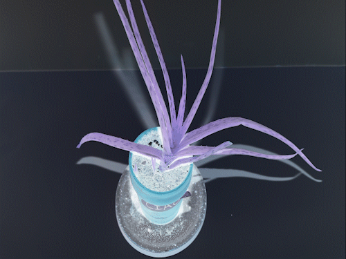

Votre aloès aime la chaleur
L'aloès désir une luminosité indirecte
Terreau pour plantes grasses
Terre à jardin
Sable
L’été
Arrosez une fois par semaine
L’hiver
Lorsque la terre est desséchée
N’oubliez pas votre aloès
Votre aloès a besoin de vous
Vous avez besoin de votre aloès
Apprenez de lui
D'avantage qu'il apprendra de vous
Observez-le attentivement
Feuilles flétries
Déshydratation
ou
Pourriture
Fleuraison à la fin de l’hiver
S’il est heureux
Si vous l'êtes aussi
Un jour
Votre aloès enfantera
Effort double
Une deuxième vie dépend de vous
Laissez l’enfant grandir
lorsqu’il est prêt
Transplantez-le
Parlez-lui sincèrement
Il vous écoutera
Communication
Subtile
Tendez-lui une oreille
Vous savez
Pour grandir
L’aloès veut s’exprimer
Abstraitement
Reconnaissez ses émotions
